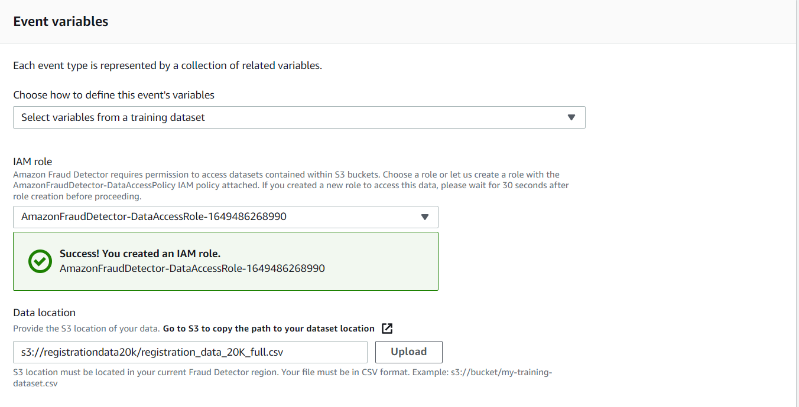

Training and deploying the Amazon Fraud Detector model
Fraud detectors need to be as accurate and reliable as possible. A robust fraud detection system should exhibit both high sensitivity and specificity. This is sometimes reached in experimental environments, but when applied to a real situation, the detection rate decreases
Dataset:

This is a CSV file that will upload to the AWS S3 cloud storage service. Each row represents a single historical event, such as new account signup. The minimum number of events required to train a model is 10,000 with at least 400 examples of fraud. Each column represents an attribute of an event. This dataset has three event attributes in addition to a timestamp and a fraud label. You can train a model with Fraud Detector, with as little as two variables or as many as 100.
Create Bucket
Create an S3 Bucket.
Image1
Once the Bucket is created, you can upload the .CSV file into it.
To view the CSV-file Click on-View

Create Event:
The first step is to define your event. This defines the Structure for events you send to the fraud detector. In the fraud detector console, select Create Event, name the event, and Assign Entity for the Event. An Entity represents who is performing an event such as a customer.
Next, we add variables to the event type to create its schema. We import schema from the training dataset file that we also use to train the model. We give the fraud detector permission to read the file from s3 by creating an IAM role using our S3 bucket name and then providing our file location in s3. Once it is done the service lists the event variables from our CSV file.

The last step is to define labels to categorize these events. We are using Fraud and Legit.
We now have our event type created and we are ready to build a model.
Build Model:
In step one of the model-building process, we will give it a name and select the model type. The model type defines the end-to-end recipe or all the specifications of the automated model creation process for your model.
Next, we select the event type and then give the service permission to read the training dataset file from S3 by providing an IAM role and a file location.
Next, the service pulls in the variables from our training data set. By default, Fraud Detector will use all the variables from the dataset as model inputs. We can remove some of the model inputs if we don't want to use them in the model.
In the label classification section, we select which of our event type labels represent fraud, and which represent legitimacy.
In the final step, we simply review our configuration and create the model. The model is now created, and a version is training.
Models usually take some time to train. So here's a model version with a ready-to-deploy status indicating it has completed training.
We can review its performance by clicking on the version. An important step in using fraud detectors is to assess the accuracy of your model. The score distribution chart provides a histogram of model score distributions to help you understand how well the model separates legitimate events from fraud events. Ideally, you get good separation with minimal overlap. The risk scores produced by models range from 0 to 1000, with 1000 being the highest risk. You can select a specific model threshold on the chart to display the legitimate and fraudulent event impact for a given score. For example, a rule using a score threshold of 705 will catch roughly 92.8% of all fraud events with a risk that 6.7% of legitimate events will be incorrectly labeled as fraud. In addition to the score distribution chart, a confusion matrix, receiver operator curve, and an area under the curve metric, or AUC metric are also provided.
If we like the model's performance and want to use it, we would then deploy the model version.
After a few minutes, it'll be available to us in a detector.
We have now created our event and built our model. The last step is to create our detector.
Create a Detector:
In the console, select Create Detector, In the first step, we will name our detector and select our event type.
Next, we will add our model. This is an optional step as you can create a rules-based detector with no model.
In this, we used a custom Fraud Detector model. Next, we add rules for this detector. The first rule is a low-risk score threshold rule. The rule condition is to flag any risk score under 905. Now, we create an outcome for this rule called approve. Then we add one more rule that flags high-risk scores for review. For this rule condition, we check if the model's output is greater than or equal to 905 and assign an outcome called a review.
The next step is to prioritize the rules to evaluate in a particular order.
In the final step, we simply review our detector configuration and create the detector.
Now, we have a new detector with version one that is in draft status. You can run test predictions against the detector using the console or the Fraud Detector API. You can change its status to active, Once you are ready to use the detector for real-time predictions and call it using the get-event-prediction API.